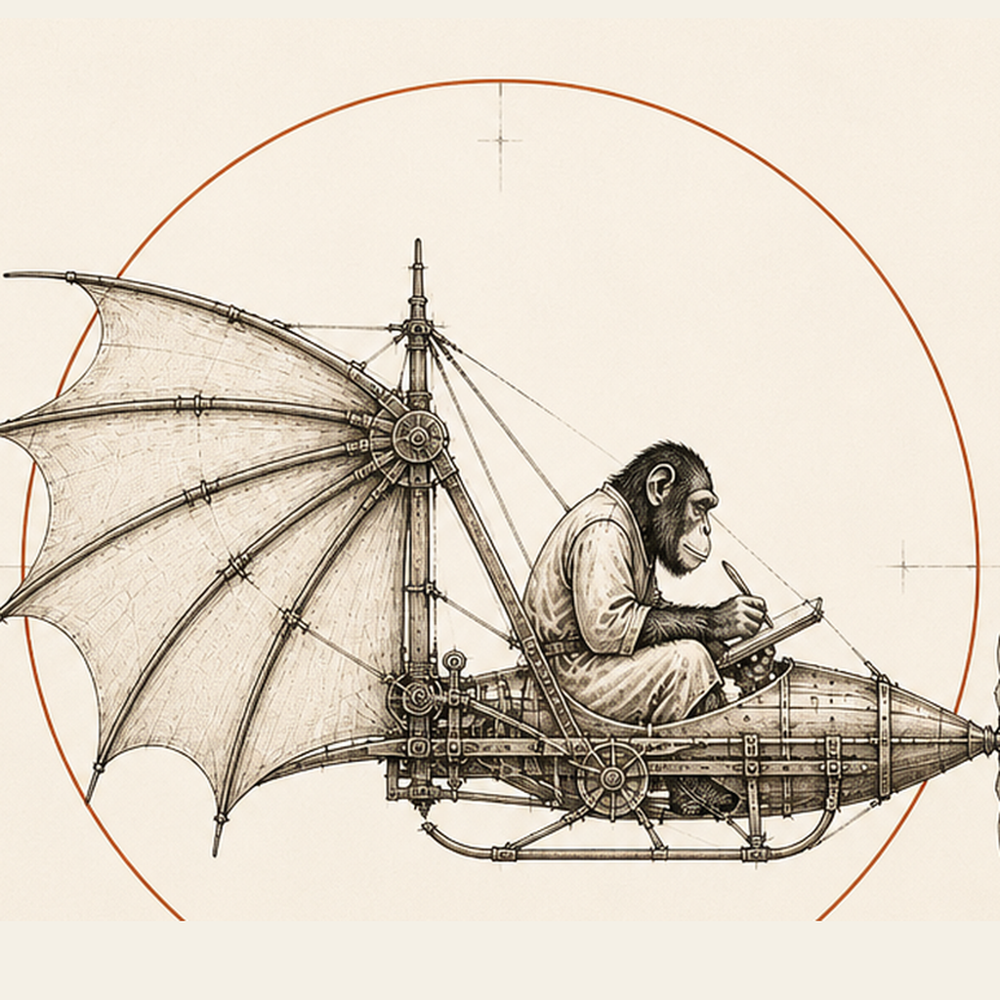
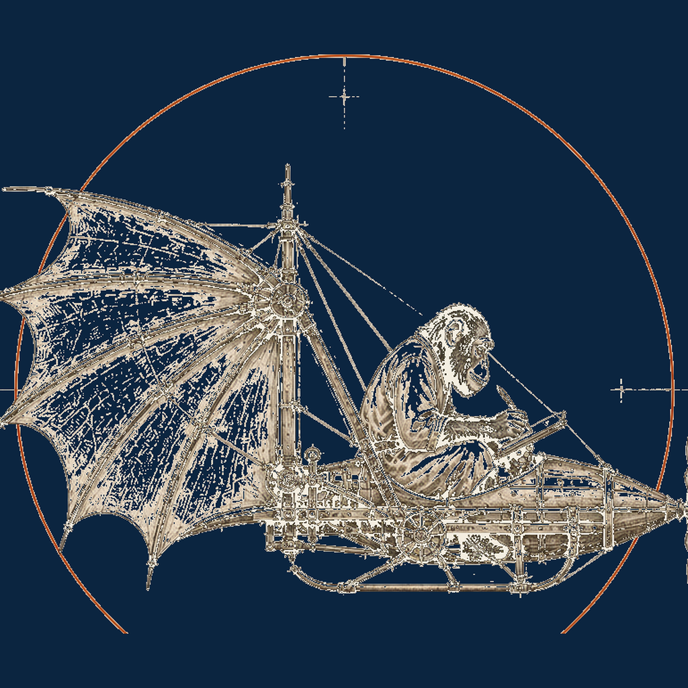
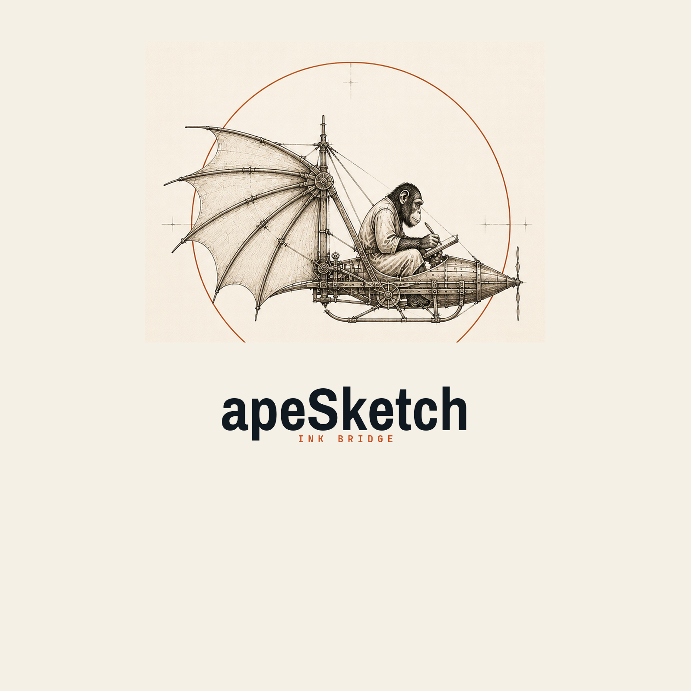
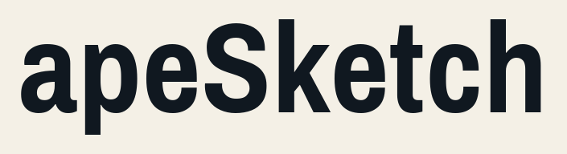

Capture
Tablet or Wi-Fi client. Strokes with time, pressure, stable IDs.
APE-SK · SHEET 01 · PRE-ALPHA

APE Ingeniería · ink bridge
Hand ink in. A Session Document out. Agents and apeCAD read the same page.
Folio · scroll down
apeSketch captures hand ink and turns it into a durable document for agents and for the ape* toolchain. It is not a whiteboard product and not a CAD modeller. The Document is the language. Clients emit Ops. The Session is live authority on the LAN.

Tablet or Wi-Fi client. Strokes with time, pressure, stable IDs.

Python source of truth. Ops in. Session Document out.

Structured ink plus on-demand raster. Then promote into apeCAD.
--root.
Install the library. Start a Session host in the folder you want as the instance root.
pip install apeSketch
python -m apeSketch
Opens a board on preferred port 9966 (HTTP) with
WebSocket on 9967. Pair at /pair.
Point another folder with --root; a second
instance binds the next free pair.
Product and architecture live in AProjects/ — ADRs, memory, specs. Locked: ink bridge, Python Document, LAN Session host, instance-scoped root.
Status: pre-alpha. MIT. Part of the ape* toolchain, not a second apeWorkbench.